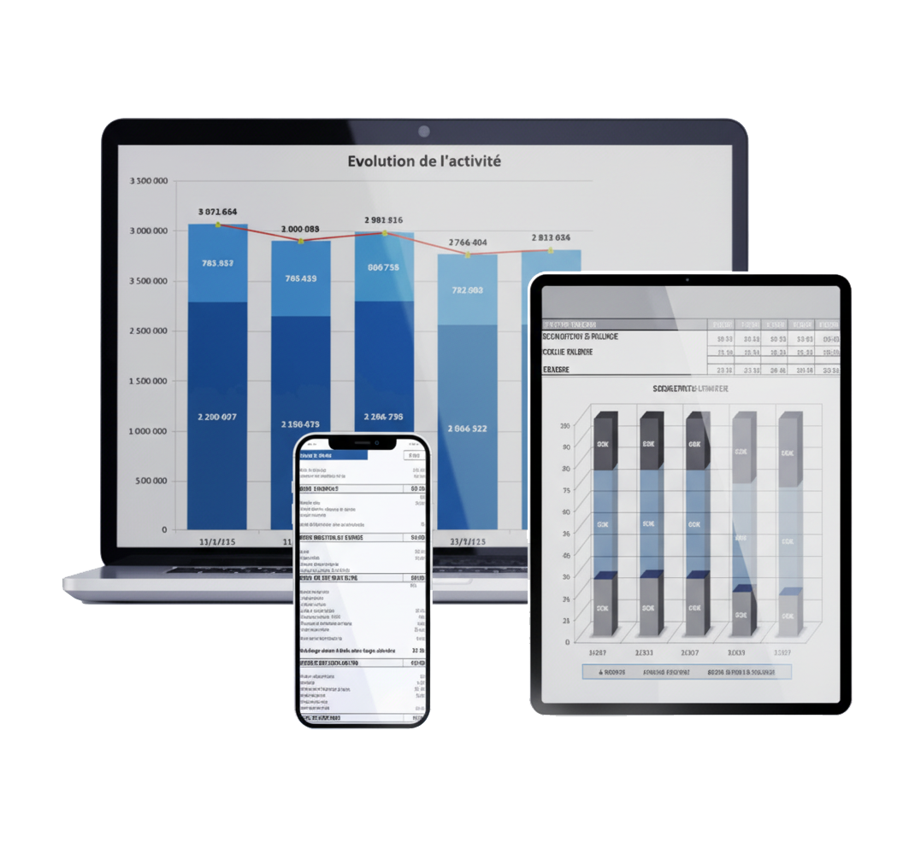

Initialisation à l'analyse financière.
Exercices d'analyses financière.
Pour en savoir plus sur l'assistant de gestion et sur toutes les applications financières
remplissez le formulaire de contact

Site destiné aux étudiants en comptabilités gestion.
MAÎTRISEZ L'ANALYSE FINANCIÈRE avec le logiciel :
L'assistant de gestion pour Excel.
Version 3.80 du 31/03/2021
Comprendre l'entreprise par la dynamique des flux de trésorerie. Surveiller les indicateurs
clefs pour prévenir la défaillance des entreprises et réaliser un diagnostic
complet.
Cette version « étudiants » permet à travers de nombreux exemples de pratiquer très rapidement
le diagnostic financier.
Elle est enrichie d'exemples concrets d'analyse qui
vous aideront à maîtriser l'analyse financière.
L'assistant de gestion
L'outil de contrôle et de suivi de l'entreprise.
Avec le logiciel, surveillez la santé
financière
des entreprises que vous conseillez.
LA PHILOSOPHIE DU LOGICIEL.
L'assistant gestion permet à partir des données comptables (balances) d'avoir une vision dynamique de l'entreprise sur plusieurs années et de contrôler les indicateurs financiers.
Logiciel réalisé en partenariat avec High Novation.

Pourquoi Assistance Gestion Informatique
Ces applications sont destinées à fournir une aide
complémentaire
dans la gestion de votre
entreprise.
Elles ne sauraient remplacer l'Expert Comptable. Elles n'ont pas pour but de se
substituer
aux situations intermédiaires telles que peuvent établir les professionels de la
comptabilité.
L'établissement de situations intermédiaires suppose de passer un grand nombre
d'opérations diverses de façon à ce que les comptes intermédiaires présentent le même
degréde précision que les comptes annuels : écritures d'inventaire, provisions charges à payer...
Plusieurs semaines voir plusieurs mois peuvent se passer avant l'établissement
d'une
situation intermédiaire du fait de la précision réquise.
Notre offre permet d'obtenir rapidement des états de gestion
présentant un niveau de
précision acceptable dans la mesure où la comptabilité est à jour.
La pertinence d'une information de gestion se mesure plus par sa rapidité
d'obtention que
par son degré de précision.